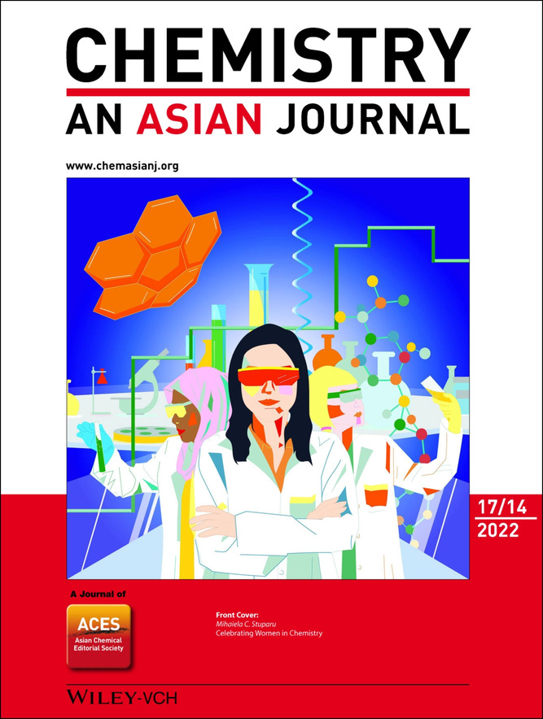

Publications

Mannose-Decorated Composite Peptide Hydrogel with Thixotropic and Syneresis Properties and its Application in Treatment of Leishmaniasis
Payel Dowari, Shalini Roy, Saurav Das, Sumit Chowdhuri, Ritvika Kushwaha, Basab Kanti Das, Anandita Ukil, Debapratim Das.
Chem. Asian J., 2022, e202200550
Cumulative Effect of pH and Redox Triggers on Highly Adaptive Transient Coacervates
Sumit Chowdhuri, Saurav Das, Ritvika Kushwaha, Tanushree Das, Basab Kanti Das, Debapratim Das*.
Chem. Eur. J., 2023, e202203820
Secondary Chemical Cross-Linking to Improve Mechanical Properties in a Multifaceted Biocompatible Strain Sensor
Ritvika Kushwaha, Souradeep Dey, Kanika Gupta, Biman B. Mandal, and Debapratim Das*.
ACS Appl. Mater. Interfaces 2024, 16, 4, 5183–5195
Targeted and precise drug delivery using a glutathione-responsive ultra-short peptide-based injectable hydrogel as a breast cancer cure
Ritvika Kushwaha, Satyajit Haldar, Tanushree Das, Anup Kumar Misra, Kuldip Jana* and Debapratim Das*..
Mater Horiz. 2024 Nov 18. doi: 10.1039/d4mh00981a